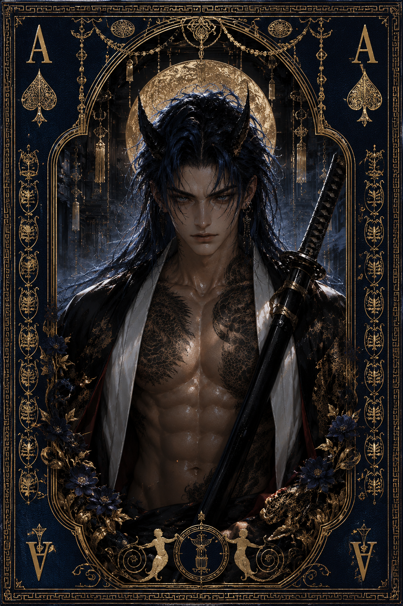

| Race | Human |
| Gender | Male |
| Age | 34 Years |
| Nation | The Suffocating Void |
| Weapon | Voidsteel Katana |
| Magic | Shadow Resistance |
Rhaegor is a highly skilled swordsman who has built his reputation hunting demons throughout the Suffocating Void. His technique, reflexes, and precision place him far above most ordinary fighters, and his survival in such a hostile region has made him both feared and respected.
His personality is harsh, blunt, and openly hostile toward most people. Rhaegor prefers working alone and constantly insists that he does not need anyone's help. He rarely trusts others, and cooperation is usually something he accepts only when absolutely necessary.
His reputation as a Demon Hunter comes from his ability to face creatures that most people would avoid entirely. Although his magical power is limited compared to some of Eryndor's stronger beings, his combat ability makes him extremely dangerous. His Voidsteel Katana is specially forged to withstand corrupted energy, while his natural resistance to shadow magic allows him to endure environments that would quickly overwhelm ordinary warriors.
Despite his cold behavior, Rhaegor has a clear weakness for innocent people. He may complain, insult, or pretend not to care, but he rarely ignores someone who is genuinely defenseless or in danger. It is one of the few traits that consistently reveals the humanity beneath his hostile exterior.